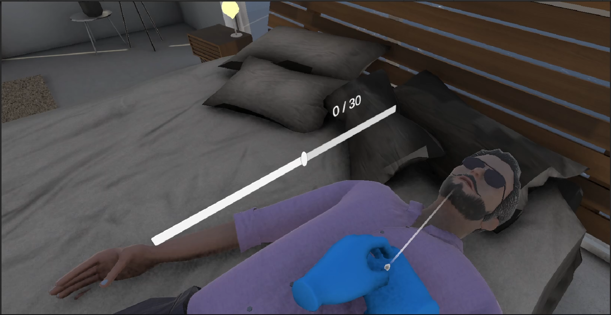

2025 - Réanimation VR

Description
Serious Game en réalité virtuelle réalisé en 48h permettant de s'exercer au rythme des compressions thoraciques lors d'une réanimation cardiaque. L'expérience se concentre sur l'acquisition du bon tempo, élément vital du secourisme.
Fonctionnalités
- Simulation immersive de massage cardiaque en VR
- Jauge visuelle de performance en temps réel
- Radio interactive permettant de choisir une musique d'accompagnement
- Playlist calibrée sur le BPM exact recommandé pour le massage cardiaque
Compétences
- Conception de Serious Game (Game Design pédagogique)
- Développement sous Unity en réalité virtuelle
- Intégration de mécaniques basées sur le rythme (BPM)
- Travail collaboratif interdisciplinaire (Ingénierie & Design)
- Feedback utilisateur (UI/UX en environnement VR)